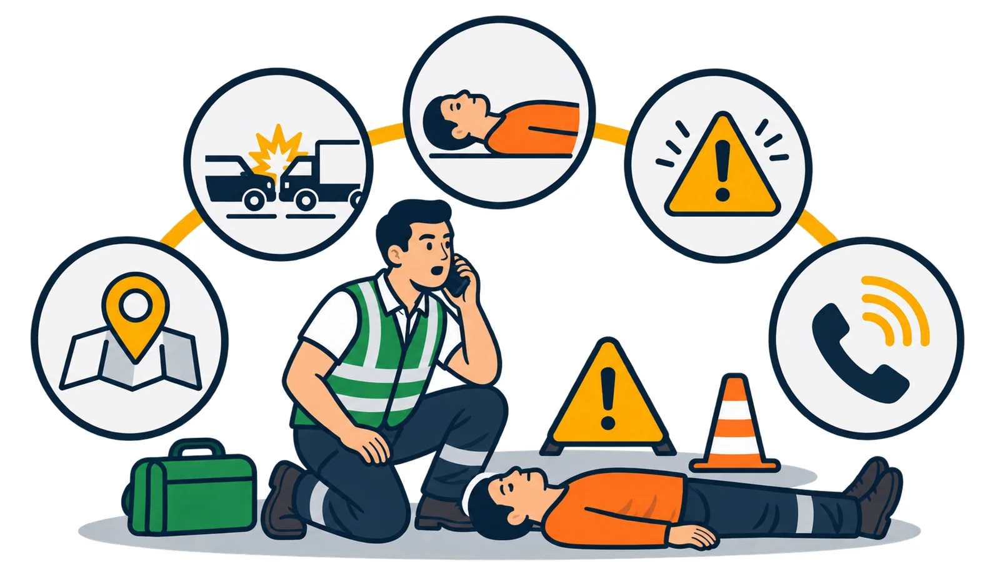
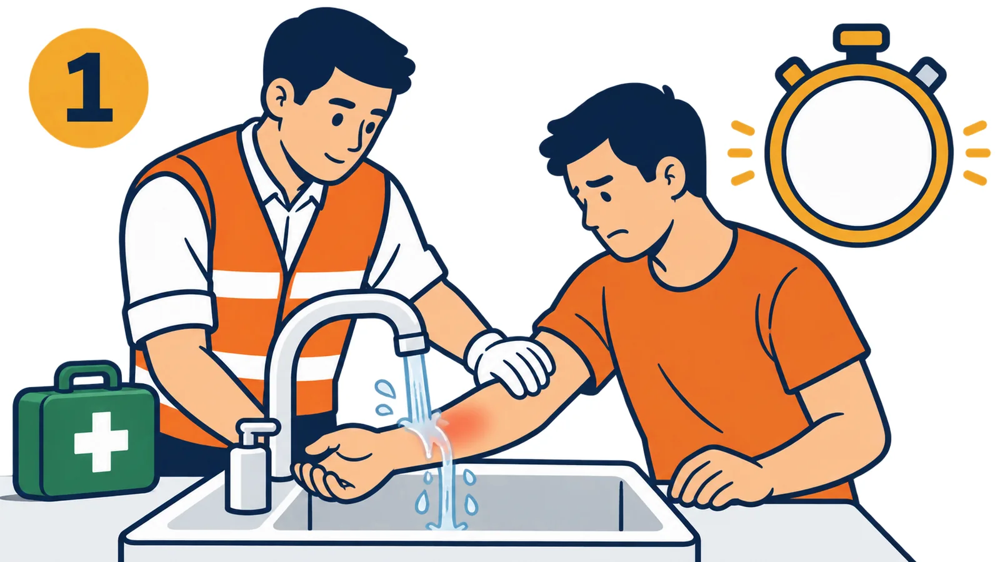
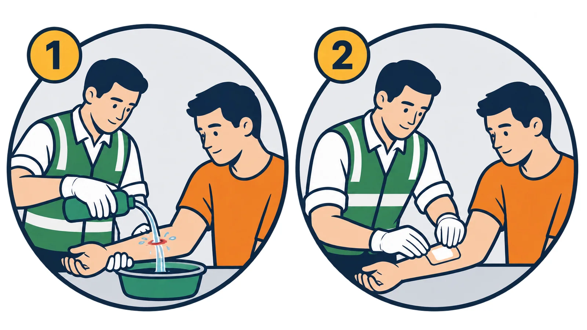
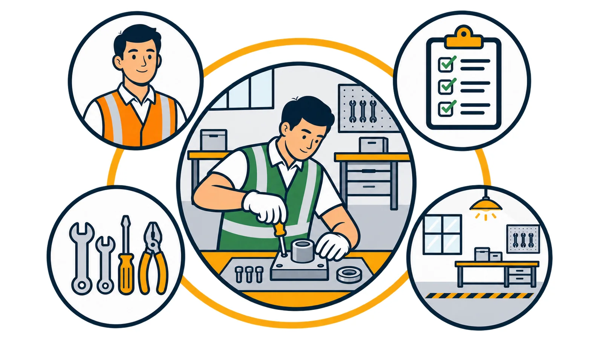
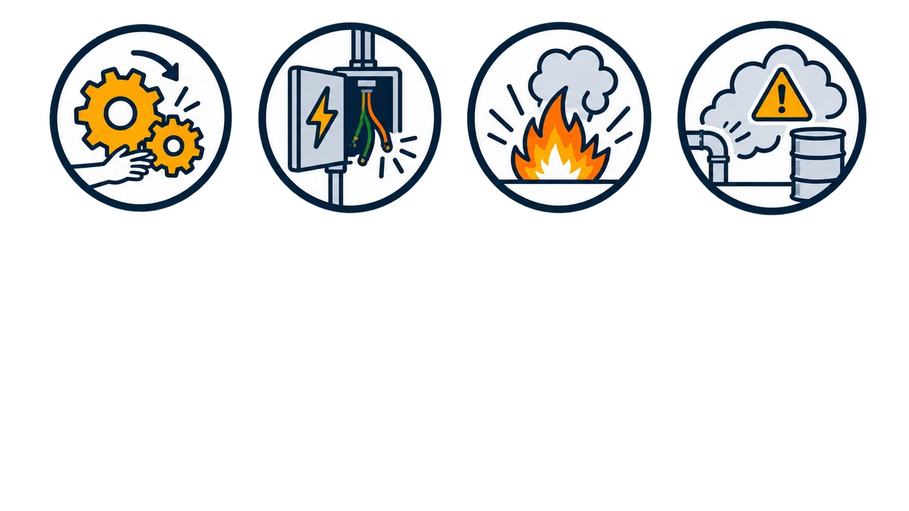
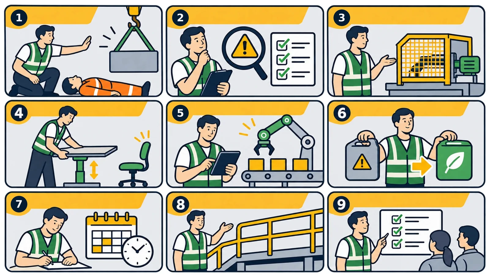
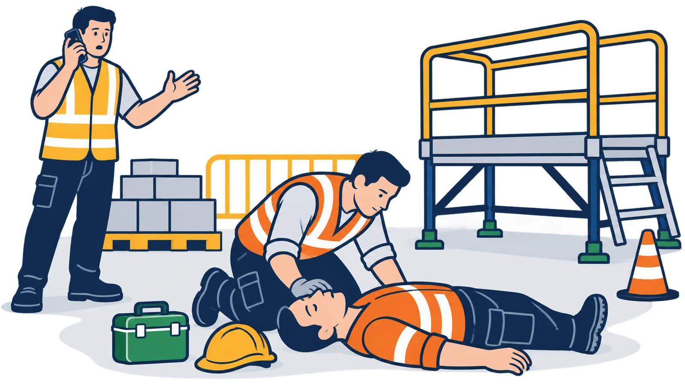
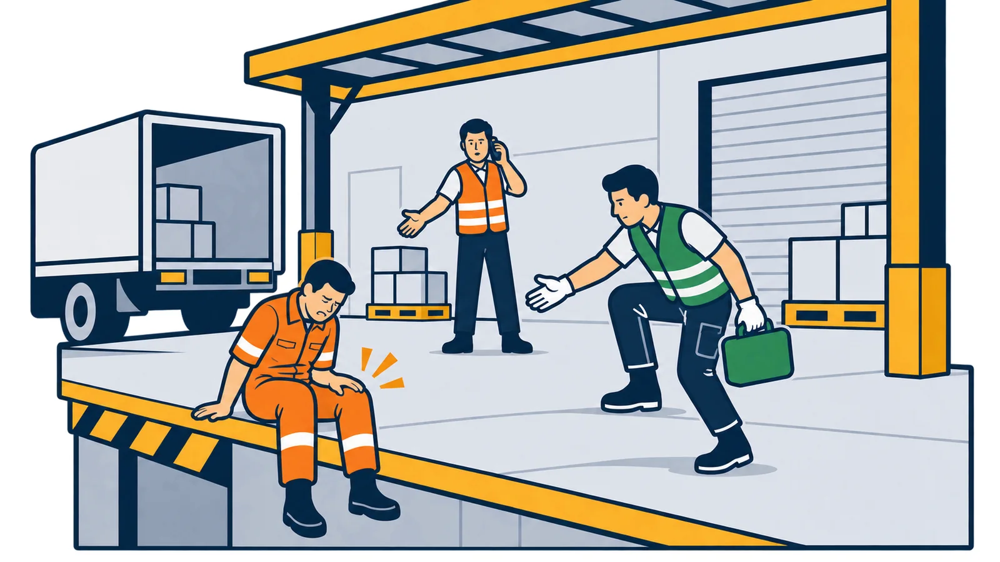
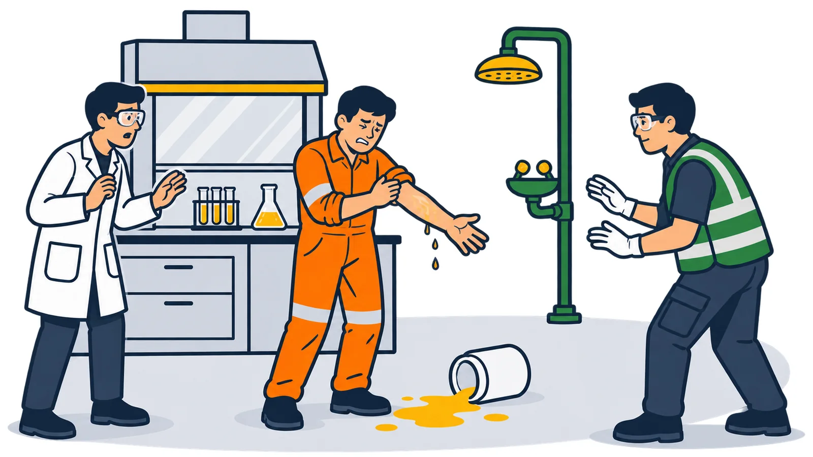

Relecture des visuels
31 images générées par IA livrées le 14/11/2026. Celles marquées « À valider » ne sont pas montrées aux apprenants tant que le concepteur ne les a pas validées. Pour en afficher une : passer sa ligne à « valide » dans data/visuels-statut.csv (ou remplacer le fichier image par la version corrigée), puis régénérer le site.
Croix blanches sur trousses vertes : signe générique ajouté par la génération ; aucun logo identifié, à confirmer au regard de la charte.
| Aperçu | Légende et alt | Statut |
|---|---|---|
 | demarche-4-etapes Protéger, examiner, faire alerter ou alerter, puis secourir. Texte alternatif : Quatre vignettes montrent le balisage, l’examen, l’alerte et la compression d’une plaie. | Affiché aux apprenants Relecture pédagogique du concepteur avant diffusion. |
 | proteger-balisage Empêcher l’accès à la zone dangereuse si le danger ne peut pas être supprimé sans risque. Texte alternatif : Un sauveteur maintient un témoin derrière le balisage d’une machine. | Affiché aux apprenants Relecture pédagogique du concepteur avant diffusion. |
 | proteger-couper-energie Couper l’énergie uniquement si l’action peut être effectuée sans exposer le sauveteur. Un arrêt d’urgence ne constitue pas une consignation. Texte alternatif : Une main actionne un organe de coupure accessible et la victime reste à distance. | Affiché aux apprenants Relecture pédagogique du concepteur avant diffusion. |
 | examiner-signes Rechercher dans l’ordre un saignement abondant, une obstruction complète des voies aériennes, la réponse et la respiration. Les trois pictogrammes du brief résument une partie de l’examen. Texte alternatif : Le sauveteur examine la victime près de pictogrammes de saignement, de réponse et de respiration. | Affiché aux apprenants Relecture pédagogique du concepteur avant diffusion. |
 | alerter-message Transmettre le numéro d’appel, le lieu précis, la nature de l’accident, les dangers persistants, le nombre de victimes, leur état et les gestes effectués. Attendre l’autorisation de raccrocher. Texte alternatif : Un témoin téléphone près de pictogrammes du lieu, de l’accident et des informations à transmettre. | Affiché aux apprenants Relecture pédagogique du concepteur avant diffusion. |
 | s1-saignement-compression Comprimer immédiatement l’endroit qui saigne et allonger la victime. Texte alternatif : Le sauveteur presse l’avant-bras de la victime allongée avec une main protégée. | Affiché aux apprenants Relecture pédagogique du concepteur avant diffusion. |
 | s1-pansement-compressif Sur un membre, le pansement compressif peut prendre le relais lorsque la compression manuelle a arrêté le saignement. Le bras est représenté au repos. Texte alternatif : Un pansement compressif couvre l’avant-bras d’une victime allongée. | Affiché aux apprenants Relecture pédagogique du concepteur avant diffusion. |
 | s2-etouffement-claques En cas d’obstruction complète, donner de une à cinq claques dans le dos et s’arrêter dès que la désobstruction est obtenue. Texte alternatif : Un adulte penché en avant reçoit une claque entre les omoplates. | Affiché aux apprenants Relecture pédagogique du concepteur avant diffusion. |
 | s2-etouffement-abdominales Après des claques inefficaces, réaliser de une à cinq compressions abdominales chez l’adulte lorsque le geste est possible. Valider le point d’appui sur l’image. Texte alternatif : Le sauveteur se tient derrière un adulte et positionne ses mains sur le haut de l’abdomen. | Affiché aux apprenants Relecture pédagogique du concepteur avant diffusion. |
 | s2-etouffement-nourrisson Soutenir la tête en prenant appui sur la mâchoire et donner jusqu’à cinq claques entre les omoplates. Faire valider le maintien et l’orientation. Texte alternatif : Un nourrisson est soutenu à plat ventre sur l’avant-bras, tête plus basse que le tronc. | Affiché aux apprenants Relecture pédagogique du concepteur avant diffusion. |
 | s3-malaise-repos Mettre la victime au repos dans une position adaptée, l’interroger et demander un avis médical. Texte alternatif : Une victime consciente est assise sous une couverture et le sauveteur reste près d’elle. | Affiché aux apprenants Relecture pédagogique du concepteur avant diffusion. |
 | s4-brulure-refroidissement Pour une brûlure thermique, refroidir immédiatement à l’eau courante tempérée au moins 10 minutes, idéalement 20 selon le V5.01. Suivre les consignes des secours. Texte alternatif : Un avant-bras est refroidi sous un filet d’eau courante à côté d’une minuterie symbolique. | Affiché aux apprenants Relecture pédagogique du concepteur avant diffusion. |
 | s5-douleur-immobilisation En cas de douleur empêchant certains mouvements, demander de ne pas bouger. Faire alerter et suivre les consignes. Texte alternatif : Après une chute, une victime reste au sol et le sauveteur lui demande de rester immobile. | Affiché aux apprenants Relecture pédagogique du concepteur avant diffusion. |
 | s6-plaie-protection Pour une plaie simple, nettoyer puis protéger avec un pansement. Vérifier les consignes liées au risque infectieux et à la vaccination antitétanique. Texte alternatif : Deux vignettes montrent le rinçage d’une plaie superficielle puis sa protection. | Affiché aux apprenants Relecture pédagogique du concepteur avant diffusion. |
 | s7-pls Pour la conduite SST, distinguer une perte de connaissance d’origine non traumatique d’un traumatisme ou d’une origine inconnue. Faire valider l’indication et la géométrie de la position avant diffusion. Texte alternatif : Deux vues montrent la victime en position latérale de sécurité. | Affiché aux apprenants Relecture pédagogique du concepteur avant diffusion. |
 | s8-rcp-compressions Comprimer au centre de la poitrine, sur la moitié inférieure du sternum, à 100–120 compressions par minute. Faire valider l’appui, l’alignement et l’axe des bras. Texte alternatif : Le sauveteur effectue des compressions thoraciques sur un adulte allongé au sol. | Affiché aux apprenants Relecture pédagogique du concepteur avant diffusion. |
 | s8-dae-etapes Allumer le DAE, suivre ses instructions et le schéma de pose des électrodes. Personne ne touche la victime pendant l’analyse ni le choc. Texte alternatif : Trois vignettes montrent l’allumage du DAE, la pose des électrodes et l’analyse sans contact. | Affiché aux apprenants Relecture pédagogique du concepteur avant diffusion. |
 | s8-insufflations Faire vérifier la libération des voies aériennes et l’étanchéité. Le V5.01 prévoit cinq insufflations initiales chez l’enfant et le nourrisson. Texte alternatif : Deux vignettes montrent une insufflation sur un adulte puis sur un enfant. | Affiché aux apprenants Relecture pédagogique du concepteur avant diffusion. |
 | danger-situation-risque Le sol mouillé crée le danger. L’exposition du piéton constitue la situation dangereuse, la glissade déclenche la chute et la lésion constitue le dommage. Texte alternatif : Quatre pictogrammes relient un sol mouillé, un piéton exposé, une glissade et une chute. | Affiché aux apprenants Relecture pédagogique du concepteur avant diffusion. |
 | itamami-5-axes Observer l’individu, la tâche, l’activité réelle, le matériel et le milieu. Texte alternatif : Cinq pictogrammes entourent un poste de travail et représentent les axes ITAMaMi. | Affiché aux apprenants Relecture pédagogique du concepteur avant diffusion. |
 | quatre-familles-dangers Repérer les dangers pour organiser la protection lors d’une intervention SST. Texte alternatif : Quatre vignettes illustrent les dangers mécaniques, électriques, thermiques et atmosphériques. | Affiché aux apprenants Relecture pédagogique du concepteur avant diffusion. |
 | neuf-principes-prevention Lire de gauche à droite et de haut en bas selon l’ordre de l’article L. 4121-2 du Code du travail. Texte alternatif : Neuf pictogrammes présentent les principes généraux de prévention. | Affiché aux apprenants Relecture pédagogique du concepteur avant diffusion. |
 | remonter-informations Décrire le lieu, le danger et les personnes exposées selon la procédure de remontée interne. Texte alternatif : Un salarié montre un danger et un responsable note son signalement. | Affiché aux apprenants Relecture pédagogique du concepteur avant diffusion. |
 | scene-f1 Identifier la zone de pincement et définir le périmètre de protection. Texte alternatif : Dans un atelier, une victime tient sa main près d’une machine tandis que le sauveteur arrive. | Affiché aux apprenants Relecture pédagogique du concepteur avant diffusion. |
 | scene-f2 Repérer le câble au sol et décider comment empêcher une seconde chute. Texte alternatif : Dans un bureau, une victime tient sa cheville près d’un câble qui traverse le passage. | Affiché aux apprenants Relecture pédagogique du concepteur avant diffusion. |
 | scene-f3 Identifier le risque de chute d’objet et contrôler les accès. Texte alternatif : Dans un entrepôt, une victime tient son épaule près d’un colis instable sur un rayonnage. | Affiché aux apprenants Relecture pédagogique du concepteur avant diffusion. |
 | scene-f4 Repérer la zone glissante, sécuriser la circulation et examiner la victime. Texte alternatif : Dans une cuisine collective, une victime est assise au sol près d’une zone humide. | Affiché aux apprenants Relecture pédagogique du concepteur avant diffusion. |
 | scene-k1 Identifier les dangers résiduels et déterminer les informations à transmettre aux secours. Texte alternatif : Sur un chantier léger, une victime est au sol près d’une plateforme de travail. | Affiché aux apprenants Relecture pédagogique du concepteur avant diffusion. |
 | scene-k2 Repérer le bord du tapis et mobiliser l’aide du témoin. Texte alternatif : Dans un accueil, une victime est assise près d’un tapis dont le bord est soulevé. | Affiché aux apprenants Relecture pédagogique du concepteur avant diffusion. |
 | scene-k3 Évaluer le risque de chute avant de s’approcher et organiser la protection. Texte alternatif : Sur un quai de chargement, une victime est assise près du bord sans garde-corps. | Affiché aux apprenants Relecture pédagogique du concepteur avant diffusion. |
 | scene-k4 Identifier le produit à distance et déterminer les premières mesures de protection. Texte alternatif : Dans un laboratoire, une victime tient son bras à distance près d’un récipient renversé. | Affiché aux apprenants Relecture pédagogique du concepteur avant diffusion. |